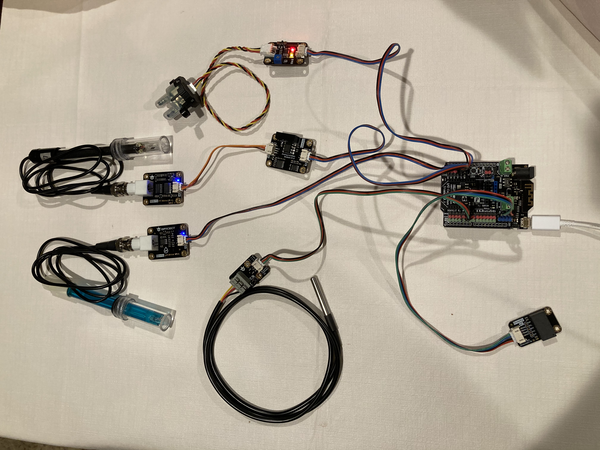

Featured Projects
View selected projects below. More information can be found at my github.
Water Quality Monitoring System

The Water Quality Monitoring System was a school project that was started by me and my fellow classmate Aaron Ramirez. The project was an optional semester-long work/study that the Professor offered to the class and of which we were the only students to participate. Our idea stemmed from an environmental series called "Down to Earth", specifically an episode that covered the public water infrastructure in Paris, France. We came to a realization that water utility infrastructure in the United States is nowhere near as robust, and in fact, is severy crippled across the country. Our goal was to create an IoT and open-source system that a water utility could cheaply incorporate into their water main networks. This system would monitor the quality of the water in these water mains and use this data to create a visualization of the water quality throughout a city. At the end of the semseter the professor asked us to incorperate out project into his start-up company at Lutiya and hired us as interns.
My role in this project was to develop a network of sensors that would gather water quality data. We decided to use an Arduino as the central processing unit because of its wide availability, ease of use, and support for many third-party sensors. I found water some water quality sensors on a third-party website, which would cover four basic water quality parameters: temperature, pH, electrical conductivity, turbidity. I connected the sensors to the Arduino and wrote the C++ program for the board. The program collects the data from the sensors and originally sent the data through a TCP connection to a google cloud server. The server ran on the CentOS 7 operating system and was also written in C++. The server stored all data in a MongoDB database cluster. We decided to change the network protocol from TCP to MQTT for its wide range and lightweight specifications for IoT devices. The current version of the device sends a JSON formatted message to an MQTT broker(server).
Technologies used:
- Arduino
- C++
- TCP Client/Server
- MQTT Client/Broker
- MongoDB
- Google Cloud
- CentOS 7
View project / case study
Padside Avionics System(Senior Project)

The Padside Avionics System was the senior project for California state University, Long Beach. Our team's goal was to create an avionics system and software to monitor flights for the schools Liquid Rocket team(aka Beach Launch Team). We used Microsofts .NET framework with Windows Presentation Foundation(WPF) as the core of out desktop application that would track and display flight data coming from a rocket in real-time.
My role in this project was to develop the User Interface for the desktop application. The application is written using WPF and the .NET framework.
Technologies used:
- C#
- .NET
- WPF
- Windows IoT core
- Raspberry Pi
View project / case study